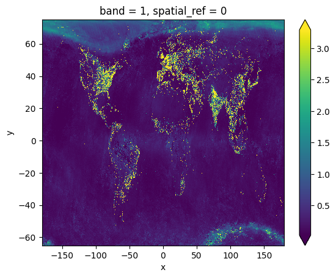

import rioxarraydata2014 = rioxarray.open_rasterio("data_2014.tif", chunks=True)data2014<xarray.DataArray (band: 1, y: 33601, x: 86401)> Size: 12GB
dask.array<open_rasterio-9da101afd2d6ee47e505ba0f85ffc579<this-array>, shape=(1, 33601, 86401), dtype=float32, chunksize=(1, 5632, 5632), chunktype=numpy.ndarray>
Coordinates:
* band (band) int64 8B 1
* x (x) float64 691kB -180.0 -180.0 -180.0 ... 180.0 180.0 180.0
* y (y) float64 269kB 75.0 75.0 74.99 74.99 ... -64.99 -65.0 -65.0
spatial_ref int64 8B 0
Attributes:
AREA_OR_POINT: Area
_FillValue: 3.4028235e+38
scale_factor: 1.0
add_offset: 0.0coarsened = data2014.coarsen(x=10, y=10, boundary='pad').max()coarsened<xarray.DataArray (band: 1, y: 3361, x: 8641)> Size: 116MB
dask.array<_nanmax_skip-aggregate, shape=(1, 3361, 8641), dtype=float32, chunksize=(1, 563, 563), chunktype=numpy.ndarray>
Coordinates:
* band (band) int64 8B 1
* x (x) float64 69kB -180.0 -179.9 -179.9 ... 179.9 180.0 180.0
* y (y) float64 27kB 74.98 74.94 74.9 74.86 ... -64.94 -64.98 -65.0
spatial_ref int64 8B 0
Attributes:
AREA_OR_POINT: Area
_FillValue: 3.4028235e+38
scale_factor: 1.0
add_offset: 0.0coarsened.plot(robust=True)
name = r"U$_\omega$"name'U$_\\omega$'